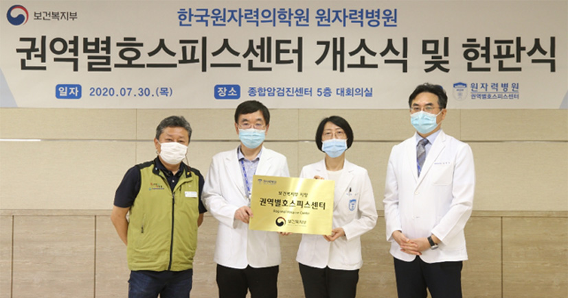

백그라운드 영역

원자력병원, 권역별호스피스센터 개소식
원자력병원(원장 홍영준)은 7월 30일(목) 종합암검진센터 5층 대회의실에서 권역별호스피스센터 개소식을 가졌다고 밝혔다.
올해 1월 1일 보건복지부가 지정하는 서울 지역 권역별호스피스센터로 선정된 원자력병원은 이번 개소식을 시작으로 본격적인 운영에 들어간다.
권역별호스피스센터는 ▲호스피스 관련 교육·훈련 지원, ▲전문 인력 양성, ▲권역 내 전문기관 네트워크 구축 연계활동, ▲인식개선
홍보활동, ▲말기환자의 현황 및 진단·치료·관리 등에 관한 사업을 추진할 계획이다.
지난 2015년 호스피스 전문기관으로 지정된 이래 원자력병원은 현재 15병상의 호스피스 완화의료 병동에서 다학제적 전문가로 구성된
호스피스팀이 입원형 호스피스 서비스를 제공하고 있다.
내달부터는 자문형 호스피스·완화의료 건강보험 수가 시범사업 기관으로 선정되어 전문인력이 직접 일반병동 및 외래를 방문해 환자와
가족을 대상으로 호스피스 서비스를 제공할 예정이다.
권역별호스피스센터 나임일 센터장은“국민의 존엄하고 편안한 생애말기 보장이라는 정부시책에 발맞춰 그간 호스피스 완화의료
사업을 통해 얻은 역량을 기반으로 서울 권역 호스피스센터로서의 역할 수행에 최선을 다 하겠다”고 밝혔다.
※ 호스피스 관련 문의 : 02-970-2630